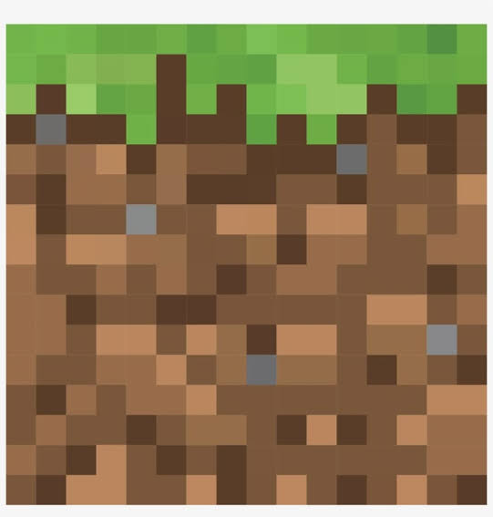
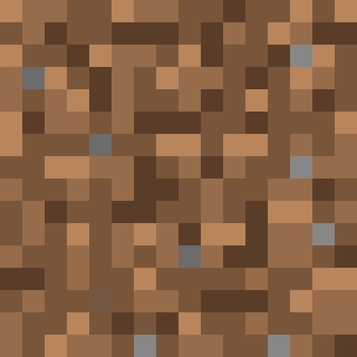
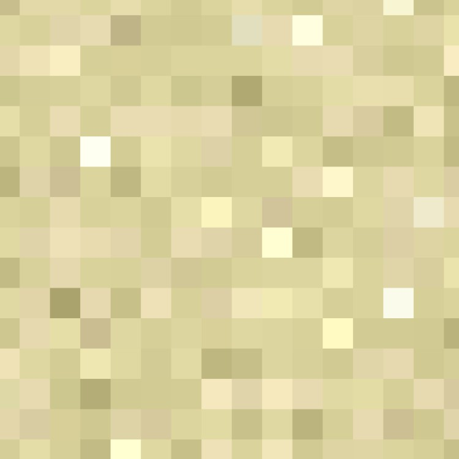
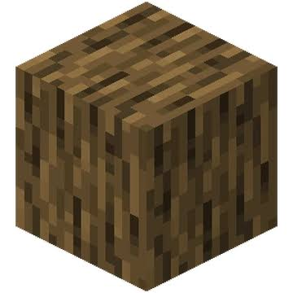

Common Block Types
The entire Minecraft world is made up of square blocks. Each block type has its own properties and uses. From simple blocks used for building, to rare blocks used to craft powerful gear.

Grass Block

Stone Block

Diamond Block

Wood Block
Basic Gameplay Loop
Players usually start by chopping trees for wood, then crafting a crafting table and basic tools such as an axe, pickaxe, and shovel. From there, players can dig underground to find stone, iron ore, and rarer resources like diamonds, which are used to upgrade gear and build larger structures.